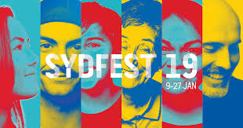
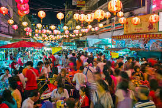
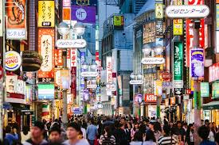
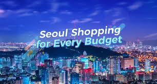
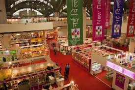
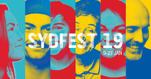
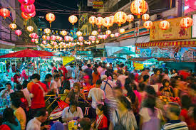
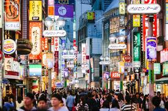
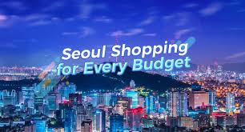
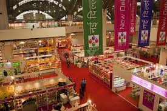

#What you see is what you get!!

The insider "House whisperer" and stylist Megan Morton
(meganmorton.com)
What's hot Safe, culturally diverse and convenient. 71/100 for hotels and transport.
What's not Pricey hotels and high transport costs. 50/100 for affordability.
The address book Expect cups, trinkets and objects you didn't know you had to have until you saw them at gallery-store Little Drom Store (thelittledromstore.com). Red Dot Design Museum's Design Journey is an excursion to 18 of the city's most design-oriented places (red-dot.sg/museum). Locals dress their spaces with Miles & Theodore's modernistic offerings from Copenhagen's Massproductions, France's Revol and Carpet Reloaded floor coverings (milesandtheodore.com). Go for the rose-petal tea; go for the marmalade; go for the vintage selection: Carpenter & Cook is a tea room that trades vintage curios, furniture and kitchenware (carpenterandcook.com).
etting there Fly Sydney to Singapore direct with Singapore Airlines (singaporeair.com), Scoot (flyscoot.com), Quantas (qantas.com), China Eastern(www.flychinaeastern.com), British Airways (britishairways.com) and Virgin Australia (virginaustralia.com).
taying there Every room in the New Majestic Design Hotel differs, the service is great and the rooms are energising. (31-37 Bukit Pasoh, newmajestichotel.com).
More info yoursingapore.co
2. Sydney
#Lime road taught me how to dress for work

The insider Style queen Melissa Penfold, author of Australian Style and co-author of Melissa Penfold's Little Black Book: Sydney's Shopping Secrets.
What's hot Great weather, cultural attractions. 71/100 for climate, culture.
What's not Short trading hours, costly hotels and tricky visas. Bargain central, it's not. 34/100 for affordability.
The address book The Country Trader has hundreds of antique-look table accessories in silver, glass, china and wood (thecountrytrader.com.au), while Spence & Lyda's glam new showroom is the place for Missoni Home linen (spenceandlyda.com.au). Double Bay's Transvaal Avenue is hot right now: start at My Island Home for Caribbean living style, African home lovelies at Doveton Kay Interiors, or French pretties at Maison et Jardin. Jan Logan Jewellery has great taste at sensible prices (janlogan.com) and Anny Lada Jewellery is the celebs' source of big, affordable, shell-based South Sea pearls (shop 37, 22 Knox Street). Top Australian fashion designers reside at The Intersection in Paddington, with Acne and Bassike for brill basics. At Robert Burton, get French Cire Trudon candles, fab Bensimon sneakers and Petit Bateau womenswear (robertburtonshop.com).
Getting there By cab or bus.
Staying there Everyone's talking about Sydney's newest hotel, QT in the heart of the city (qtsydney.com.au).
More info seesydney.com.au.
3. Bangkok
#Let me Dress Like a Bollywood Diva!!

The insider Photographer Matt Burns splits his time between Australia and Bangkok (southeastasiaimages.com).
What's hot Fun street markets, great hotels and spectacular food. 69/100 for affordability.
What's not Dodgy counterfeits. 50/100 for culture and climate.
The address book Monte Carlo tailors isn't a cheap option, but the staff do provide fantastic quality and service. Expect to pay $300-$1000 for a suit, depending on the cloth (mctailor.com). I can't recommend Fotofile in the MBK Centre highly enough for its professional camera equipment and unsurpassed knowledge and service. Try and talk to Khun Kong for the best service (fotofile.net). Pantip Plaza has every piece of computer equipment you'll ever need, but know your prices first (604 New Petchaburi Road). For clothes, homewares and pretty much everything in the world, visit the Chatuchak weekend market. Get in early before the heat and crowds (chatuchak.org) and shop for Thai silk at Narai Phand in the Royal Thai Government Handicrafts Centre (naraiphand.com).
Getting there Fly Sydney to Bangkok direct with Thai Airways (thaiairways.com.au), Emirates (emirates.com) or Qantas (qantas.com).
Staying there The new, wallet-friendly Aloft Bangkok is a quick tuk-tuk trip to Bangkok's shopping strips (aloftbangkoksukhumvit11.com).
More info thailand.net.au.
4. Tokyo
#Hottest Picks By Star Stylish!!

The insider Melbourne/NY interiors stylist Glen Proebstel (glenproebstel.com).
What's hot A great events calendar. 92/100 for hotels and transport.
What's not Few sales and super-high hotel, transport and dining costs. 20/100 for affordability.
The address book Claska Gallery and Shop is the perfect destination to sample the best of local and international design makers and crafters (claska.com). New York fashion store Opening Ceremony opened a Tokyo branch that's a must-visit (openingceremony.us). For beautifully chosen industrial vintage, visit Journal Standard Furniture (js-furniture.jp). As the name says, I Find Everything Tokyo (ifindeverythingtokyo.com). Fog Linen Work has been a recognisable brand in many boutique homeware stores throughout Australia, but nothing compares to visiting where it all began (foglinenwork.com).
Getting there Fly Sydney to Tokyo direct with Qantas (qantas.com) or with Jetstar, via Gold Coast or Cairns (jetstar.com).
Staying there The Park Hotel Tokyo is a soothing oasis amid the neon (en.parkhoteltokyo.com).
More info jnto.org.au.
5. Seoul
#Shop More And Explore Sydney!!

The insider Australian model Jessica Gomes, a bona fide superstar in Korea (iamjessicagomes.com).
What's hot Good mix of old markets and new boutiques. 66/100 for hotels and transport.
What's not Dodgy weather and a challenging hotel scene. 43/100 for retail affordability.
The address book The Galleria Department Store, in the Apgujeong-dong retail district, is super-modern and cool for international luxury brands. Dongdaemun Shopping Market is open from midnight until early morning. I love buying from young Korean designers who provide great quality at a good price. The Hyundai Department Store has a mixture of Korean and international labels, as well as a great food market. Green Street has cool hipster cafes and boutiques. Korea has great labels such as VOV (myvov.com) and really good up-and-coming designers in the boutiques in Apgujeong-dong.
Getting there Fly Sydney to Seoul direct with Korean Air (koreanair.com) or Asiana Airlines (flyasiana.com).
Staying there The IP Boutique Hotel is a quirky hotel in the expat Itaewon district (737-32 Hannam-dong, Yongsan-gu, ipboutiquehotel.com).
More information visitkorea.or.kr.
6. Delhi
#Fasion Is What You Buy And Style Is What You Do With It!!

The insider Interior stylist, creative director and owner of The Society Inc, Sibella Court (thesocietyinc.com.au).
What's hot Fabulous sights and haggling shopkeepers. 63/100 for affordability.
What's not Weak for mall rats, tough visas and struggling transport. 40/100 for shopping.
The address book The Full Circle Bookstore has every book of every author who has ever spoken or been a part of Jaipur's incredible literary festival (fullcirclebooks.in). The National Handicrafts & Handlooms Museum gives an insight into the skill and technique behind it all, and craftspeople sell their wares in the courtyard (nationalcraftsmuseum.nic.in). Anokhi is great for the travelling basics - scarves, cotton pants - all lovely and affordable (www.anokhi.com). I love the Chandni Chowk market in Old Delhi, especially the hardware section with all the vendors tinkering away. Kamayani has amazing handmade textiles from across India, selected with a superb eye (kamayani.in).
Getting there Fly Sydney to Delhi with China Southern (via Guangzhou) (csair.com/en), Singapore Airlines (singaporeair.com) and Virgin Australia via Singapore (virginaustralia.com).
Staying there The Manor is a stylish boutique hotel in New Friends Colony, with just 15 rooms and a lot of luxury (themanordelhi.com).

The insider Style queen Melissa Penfold, author of Australian Style and co-author of Melissa Penfold's Little Black Book: Sydney's Shopping Secrets. What's hot Great weather, cultural attractions. 71/100 for climate, culture. What's not Short trading hours, costly hotels and tricky visas. Bargain central, it's not. 34/100 for affordability. The address book The Country Trader has hundreds of antique-look table accessories in silver, glass, china and wood (thecountrytrader.com.au), while Spence & Lyda's glam new showroom is the place for Missoni Home linen (spenceandlyda.com.au). Double Bay's Transvaal Avenue is hot right now: start at My Island Home for Caribbean living style, African home lovelies at Doveton Kay Interiors, or French pretties at Maison et Jardin. Jan Logan Jewellery has great taste at sensible prices (janlogan.com) and Anny Lada Jewellery is the celebs' source of big, affordable, shell-based South Sea pearls (shop 37, 22 Knox Street). Top Australian fashion designers reside at The Intersection in Paddington, with Acne and Bassike for brill basics. At Robert Burton, get French Cire Trudon candles, fab Bensimon sneakers and Petit Bateau womenswear (robertburtonshop.com). Getting there By cab or bus. Staying there Everyone's talking about Sydney's newest hotel, QT in the heart of the city (qtsydney.com.au). More info seesydney.com.au.

The insider Photographer Matt Burns splits his time between Australia and Bangkok (southeastasiaimages.com). What's hot Fun street markets, great hotels and spectacular food. 69/100 for affordability. What's not Dodgy counterfeits. 50/100 for culture and climate. The address book Monte Carlo tailors isn't a cheap option, but the staff do provide fantastic quality and service. Expect to pay $300-$1000 for a suit, depending on the cloth (mctailor.com). I can't recommend Fotofile in the MBK Centre highly enough for its professional camera equipment and unsurpassed knowledge and service. Try and talk to Khun Kong for the best service (fotofile.net). Pantip Plaza has every piece of computer equipment you'll ever need, but know your prices first (604 New Petchaburi Road). For clothes, homewares and pretty much everything in the world, visit the Chatuchak weekend market. Get in early before the heat and crowds (chatuchak.org) and shop for Thai silk at Narai Phand in the Royal Thai Government Handicrafts Centre (naraiphand.com). Getting there Fly Sydney to Bangkok direct with Thai Airways (thaiairways.com.au), Emirates (emirates.com) or Qantas (qantas.com). Staying there The new, wallet-friendly Aloft Bangkok is a quick tuk-tuk trip to Bangkok's shopping strips (aloftbangkoksukhumvit11.com). More info thailand.net.au.

The insider Melbourne/NY interiors stylist Glen Proebstel (glenproebstel.com). What's hot A great events calendar. 92/100 for hotels and transport. What's not Few sales and super-high hotel, transport and dining costs. 20/100 for affordability. The address book Claska Gallery and Shop is the perfect destination to sample the best of local and international design makers and crafters (claska.com). New York fashion store Opening Ceremony opened a Tokyo branch that's a must-visit (openingceremony.us). For beautifully chosen industrial vintage, visit Journal Standard Furniture (js-furniture.jp). As the name says, I Find Everything Tokyo (ifindeverythingtokyo.com). Fog Linen Work has been a recognisable brand in many boutique homeware stores throughout Australia, but nothing compares to visiting where it all began (foglinenwork.com). Getting there Fly Sydney to Tokyo direct with Qantas (qantas.com) or with Jetstar, via Gold Coast or Cairns (jetstar.com). Staying there The Park Hotel Tokyo is a soothing oasis amid the neon (en.parkhoteltokyo.com). More info jnto.org.au.

The insider Australian model Jessica Gomes, a bona fide superstar in Korea (iamjessicagomes.com). What's hot Good mix of old markets and new boutiques. 66/100 for hotels and transport. What's not Dodgy weather and a challenging hotel scene. 43/100 for retail affordability. The address book The Galleria Department Store, in the Apgujeong-dong retail district, is super-modern and cool for international luxury brands. Dongdaemun Shopping Market is open from midnight until early morning. I love buying from young Korean designers who provide great quality at a good price. The Hyundai Department Store has a mixture of Korean and international labels, as well as a great food market. Green Street has cool hipster cafes and boutiques. Korea has great labels such as VOV (myvov.com) and really good up-and-coming designers in the boutiques in Apgujeong-dong. Getting there Fly Sydney to Seoul direct with Korean Air (koreanair.com) or Asiana Airlines (flyasiana.com). Staying there The IP Boutique Hotel is a quirky hotel in the expat Itaewon district (737-32 Hannam-dong, Yongsan-gu, ipboutiquehotel.com). More information visitkorea.or.kr.

The insider Interior stylist, creative director and owner of The Society Inc, Sibella Court (thesocietyinc.com.au). What's hot Fabulous sights and haggling shopkeepers. 63/100 for affordability. What's not Weak for mall rats, tough visas and struggling transport. 40/100 for shopping. The address book The Full Circle Bookstore has every book of every author who has ever spoken or been a part of Jaipur's incredible literary festival (fullcirclebooks.in). The National Handicrafts & Handlooms Museum gives an insight into the skill and technique behind it all, and craftspeople sell their wares in the courtyard (nationalcraftsmuseum.nic.in). Anokhi is great for the travelling basics - scarves, cotton pants - all lovely and affordable (www.anokhi.com). I love the Chandni Chowk market in Old Delhi, especially the hardware section with all the vendors tinkering away. Kamayani has amazing handmade textiles from across India, selected with a superb eye (kamayani.in). Getting there Fly Sydney to Delhi with China Southern (via Guangzhou) (csair.com/en), Singapore Airlines (singaporeair.com) and Virgin Australia via Singapore (virginaustralia.com). Staying there The Manor is a stylish boutique hotel in New Friends Colony, with just 15 rooms and a lot of luxury (themanordelhi.com).